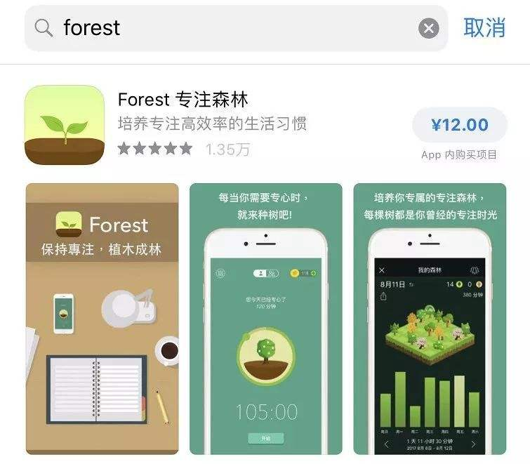

（一）产品概括

Forest 专注森林是一个帮助用户暂时放下手机，专心于目前工作的效率软件。
产品的图主色调为绿色，象征着清新宁静以及环保。图标的形状为小苗种在土壤上的2.5D型，这很好的与产品名称Forest相对应，让用户第一眼就大致明白是什么软件，简约的风格符合追求效率的意义特征。
（二）产品定位
产品使用的Slogan：保持专注，勿做低头族。
从slogan很清楚的明白：产品的定位是帮助用户在工作学习等期间，暂时放下手中的手机，专注于真正需要做的事情，从而提高学习工作的效率，进而改善用户的生活习惯——远离手机成瘾症。
Forest 专注森林，是一款帮助用户专心于当前事务的个人效率型App。